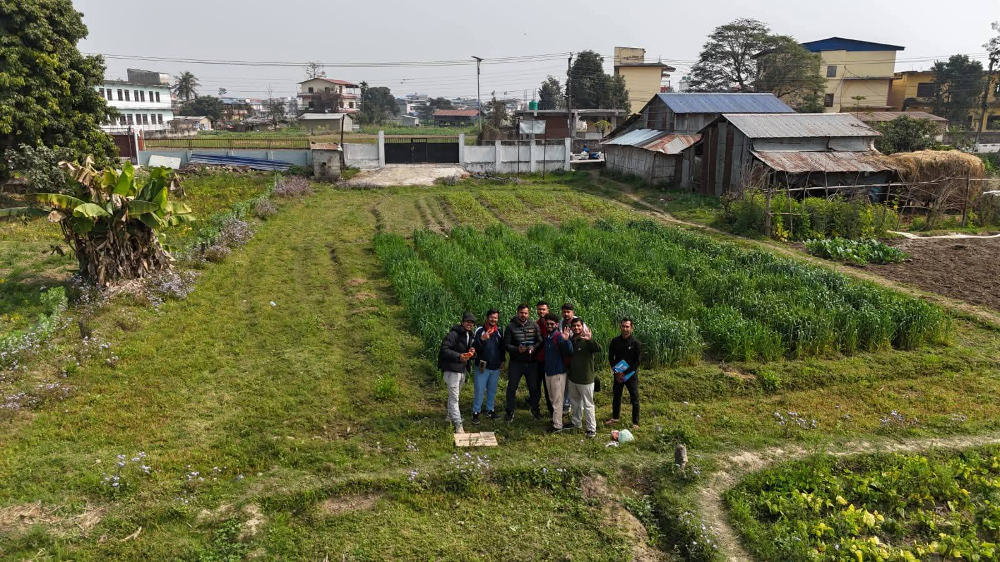
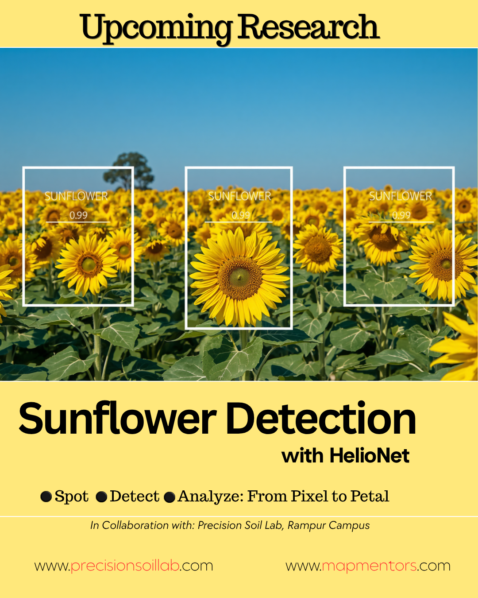
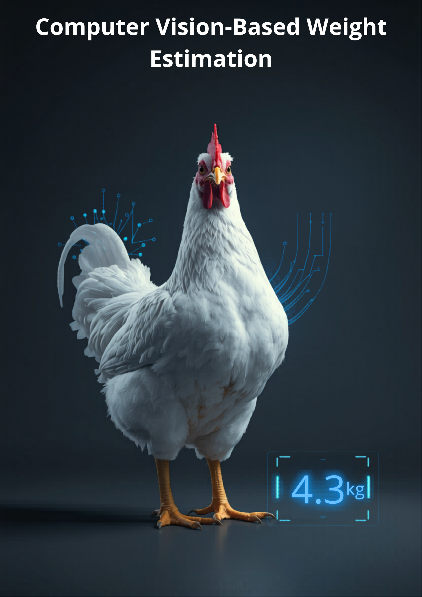
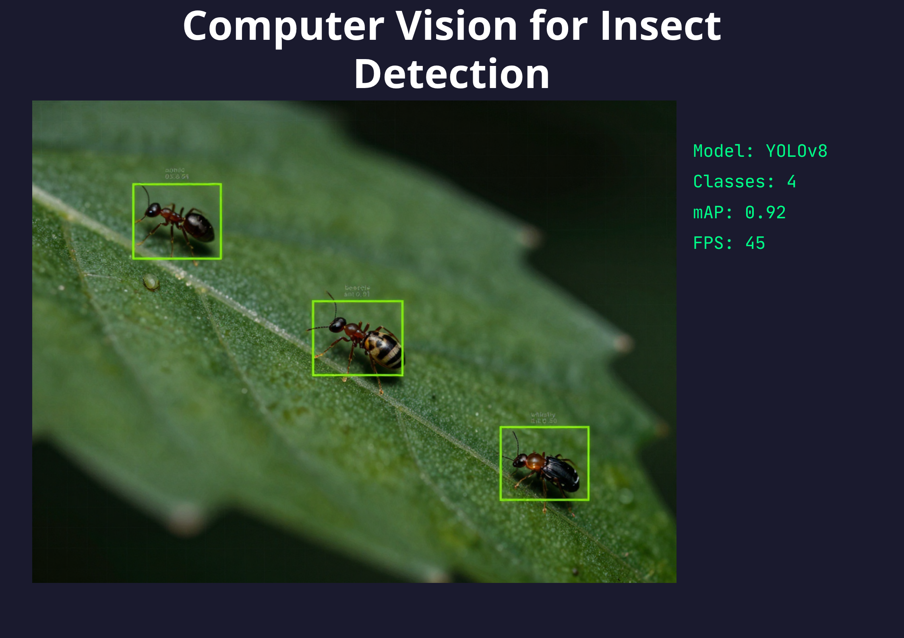

Advancing geospatial science through innovative research and development
In collaboration with the IAAS, Rampur Campus, Chitwan, Nepal, we are developing a scalable decision support system for maize farmers utilizing DJI Phantom 4 RTK multispectral drone imagery and machine learning models for site-specific recommendations of nitrogen and effect of Biochar. This research is being led by Asst. Prof. Krishna Aryal, at IAAS, Rampur Campus, Chitwan, Nepal.

Deep learning Computer Visionmodels for automated measurement of the diameter and perimeter of a sunflower from RGB imagery. This project enables estimation of the size of an sunflower and seeds in its center, helping farmers for decision support.

Building a light weight computer vision model to estimate and predict the weight of Broiler poultry from multi-angle images captured using smartphone camera. This research is being conducted in collaboration with the IAAS, Lamjung Campus, Nepal, Department of Animal Sciences. Co-PI Asst. Prof. Utshav Pandey is leading this project from the animal science perspective.

Developing integrated decision support systems that combine remote sensing, climate data, and traditional farming knowledge for climate-resilient agriculture. This framework helps farmers adapt to climate variability while maintaining productivity.

We're always looking for research partners and collaborative opportunities
Get in Touch